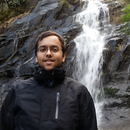

  <!--<h1 class="page-heading"><a href="{{ page.permalink }}">{{ page.title }}</a></h1>-->
<div id="main-container" style="">
	 
	<p style="margin: 10px 0px 0px 0px;"> I am a rising fourth year undergraduate at the <a href="http://seas.virginia.edu/">University of Virginia</a> pursuing a degree in computer engineering. This summer I will be a software engineering intern at <a href="http://www.generaldynamics.com/">General Dynamics</a> in Virginia Beach. At UVA I've worked with the <a href="http://hplp.ece.virginia.edu/">HPLP</a> and <a href="http://cap.virginia.edu/">CAP</a> groups where I worked on implementing hierarchical temporal memory on the Automata Processor. I am interested in software development, computer architecture, algorithms, automata theory, outdoors, pc gaming, and frisbee.</p>
</span>
  <!--<p class="rss-subscribe">subscribe <a href="{{ "/feed.xml" | prepend: site.baseurl }}">via RSS</a></p>-->

</div>
